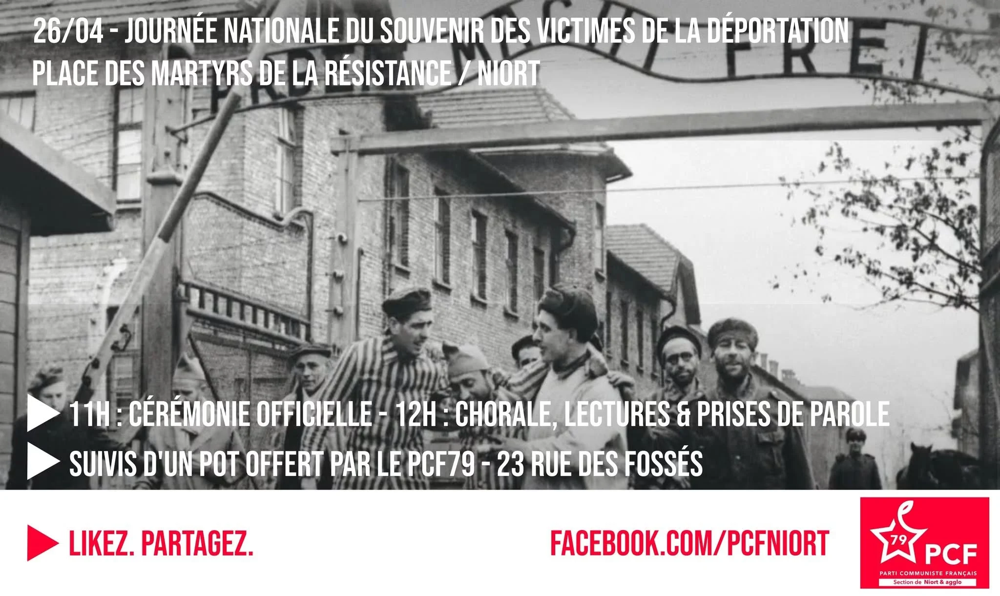

Annonce fédérale
À Niort, notre appel pour la Journée nationale du souvenir de la déportation
Date de mise à jour indiquée par Facebook · 24 avril 2026
Repères éditoriaux
Nous avions appelé à nous retrouver dimanche 26 avril sur la place des Martyrs de la Résistance à Niort. L’affiche annonçait la cérémonie officielle à 11 h, puis des chants, des lectures et des prises de parole à midi, avant un moment de partage dans nos locaux, au 23, rue des Fossés.
Texte de la publication · PCF Niort
Le PCF 79 - Parti Communiste Français fédération des Deux-Sèvres invite à participer largement à la Journée nationale du souvenir des victimes de la déportation qui aura lieu Dimanche prochain à partir de 11h à Niort. Ensemble, pour que les atrocités du régime nazi ne se reproduisent plus jamais.
#PCF #AntiFascisme PCF - Parti Communiste Français

Sources
PCF Niort · publication relayée par le PCF 79 · bibliothèque Facebook · AR-0002-FB-00801
À lire aussi · À Niort, nous avons honoré la mémoire des victimes de la déportation